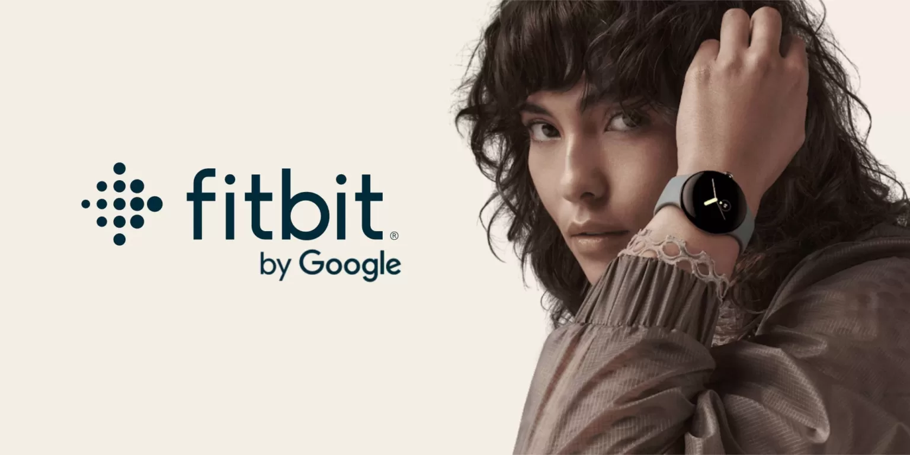
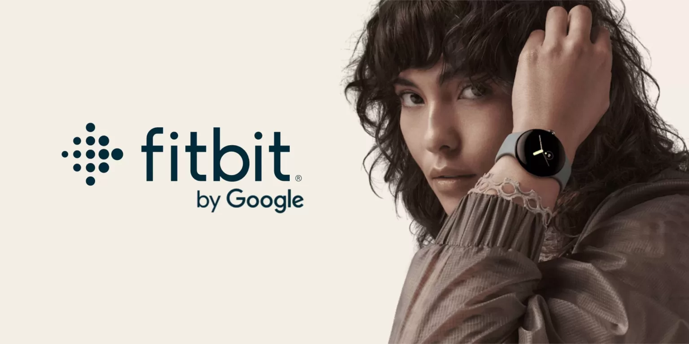

Global Vaccine Tracker: The Global Vaccine Tracker is a Tableau visualization project created to track global vaccination rates against COVID-19. This dashboard provides an insightful overview of vaccination progress across different countries and regions, with interactive features allowing for in-depth analysis of trends and comparisons.
 

Focus on a Bellabeat product and analyze smart device usage data in order to gain insight into how people are already using their smart devices and discover trends for Bellabeat marketing strategy. Using my alanlysis I have also been aksed to give highl evel recommendations for how these trends can inform Bellabeat marketing strategy. Please Click 'Full Case Study' below to view recommendations.
This program helped me sharped my expertise in data cleaning, data visualization with Tableau, and performing statistical analyses with R
Programming, as evidenced by obtaining the Google Data Professional certification. Please Click 'Professional Certification' below to view the offcial certification.